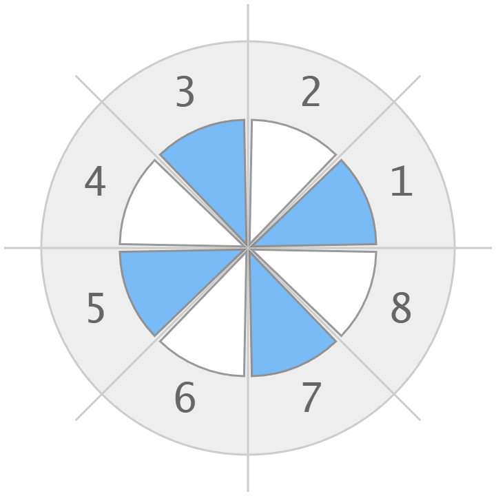

Angle meter
Online angle meter
If you want to measure angles, but you don't have a protractor at hand,
you can take measurements using this online angle meter.
You don't need to install any protractor applications on your smartphone or computer
because this online tool simply works in a browser.
It is possible to measure right, acute and obtuse angles in degrees from 0° to 360°
using the angle meter online.
Mobile angle meter
Being launched on a smartphone or tablet,
the application uses the capabilities of the built-in accelerometer to determine the tilt of the device.
So you can just rotate the mobile phone to measure the angle of inclination.
To use it similarly to a native mobile app, you can add a shortcut via the menu item "Add to Home Screen" or
"Add to Phone" in the browser.
Without a phone, you can still use the protractor online, setting the angles manually with mouse clicks,
scrolling the mouse wheel, or simply entering the angle in the text input.
If you want to know how the mobile protractor is implemented you can see details here.
Online protractor
The instrument for measuring angles has its own special name - a protractor.
It is a round or semicircular tool for measuring or drawing angles on paper.
But sometimes a protractor is needed in everyday life.
For example, to divide a pizza into equal parts, to hang a picture exactly,
or to find out the angle of inclination of a satellite plate.
The phone is always with you, you can use it for this.
Angle maker
With this tool, you can make any angle with an accuracy of one degree.
Just enter the angle value into the input field in the upper right corner.
Mouse wheel over the protractor area also increments or decrements the angle with one degree precision.
Before creating the angle you want, you need to turn off the accelerometer (if it was turned on) via the
checkbox in the left upper corner.
Real angle meters
Virtual tool is useful occasionally, mostly for fun.
In the real life, in professional work people use real instruments.
School protractor
At school, everyone had such a transparent plastic protractor for measuring angles.
Bubble level angle meter
The core of this tool is liquid with a bubble in a glass vial.
You just need to centre the bubble between the divisions on the vial.
Arrow connected with the vial will indicate the measured angle.
It is easy to use with accuracy to within plus or minus 1 degree.
Stainless steel protractor
Steel protractor is useful for setting bevels, transferring angles, architectural design or engineering
drawing.
It consists of a body with graduations from 0 to 180 degrees and a blade that can be locked at any angle.
Digital ruler-based angle meter
It has two stainless steel rulers and a digital angle sensor with a display runs on a battery.
You can easily and accurately measure angles and lengths.
Electronic inclinometer
Typically it is a portable battery powered device with a display and inclinometer sensors.
Professional digital inclinometers guarantee excellent precision in measuring angles.
Marketplaces offer different devices that provide high accuracy angle measurement at a reasonable cost.
Smartphone app
There are some amazing smartphone applications to measure angles.
Nowadays smartphones can identify their orientation using an accelerator, an integrated micro device with
axis-based motion sensing.
This information can be used by the apps to determine the angle at which a device is tilted with respect to
the Earth, or calculate the angle between two positions of the mobile device.
Another approach to measure angles via smartphone is based on image and photo analysis.
You can just take a picture with camera or from gallery, and then measure angles and lengths.
Angle units
Full turn can be divided into pieces of the same size.
The most common unit of measurement is the degree (and smaller fractions of the degree).
- Degree = 1/360 of full turn. Sign of the degree is °
- Minute = 1/60 of the degree. Sign of the minute is '
- Second = 1/60 of the minute. Sign of the second is "
For example: 35 degrees 5 minutes 27 seconds is written as 35° 5' 27"
Degree
Degree is 1/360 of a turn, or 1°
Full turn contains 360 degrees.
Also there are other types of division - circular sectors.
Sectors of a certain size have their own special names.
Quadrant
Quadrant is 1/4 of a turn, or 90°
Full turn contains 4 quadrants.
Sextant
Sextant is 1/6 of a turn, or 60°
Full turn contains 6 sextants.
Octant

Octant is 1/8 of a turn, or 45°
Full turn contains 8 octant.
Clock position
Clock position is 1/12 of a turn, or 30°
Full turn contains 12 positions.
See also